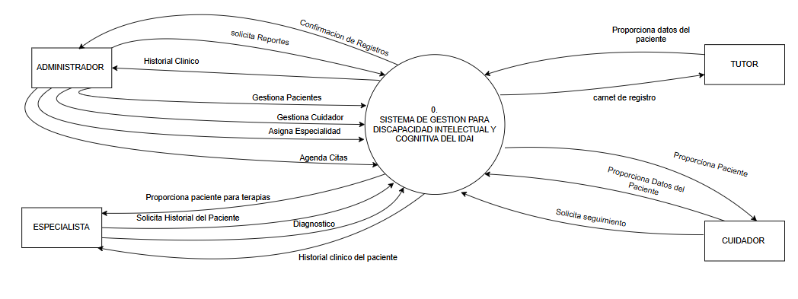
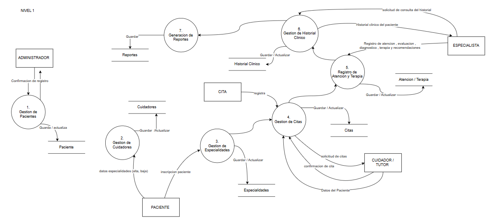
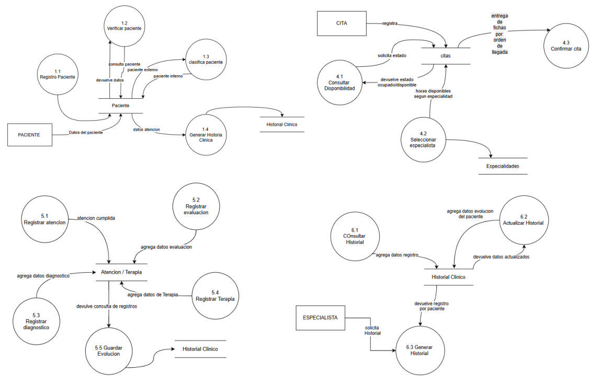
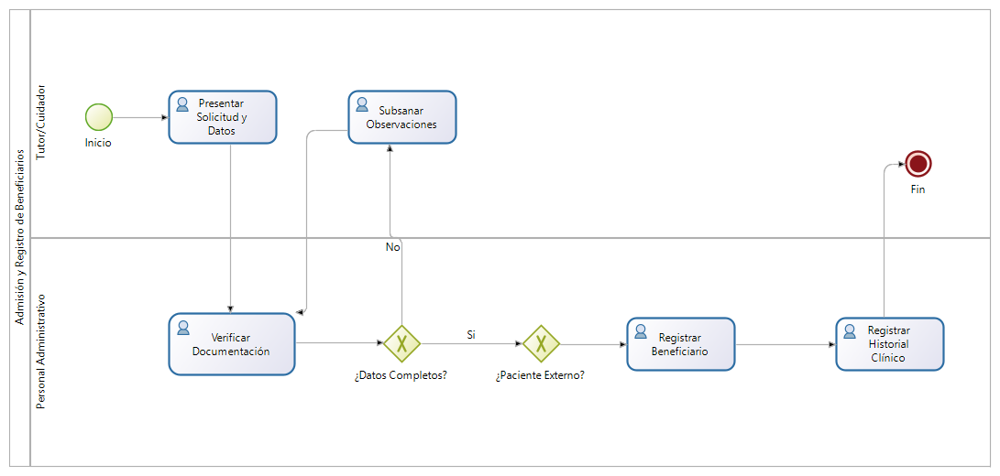
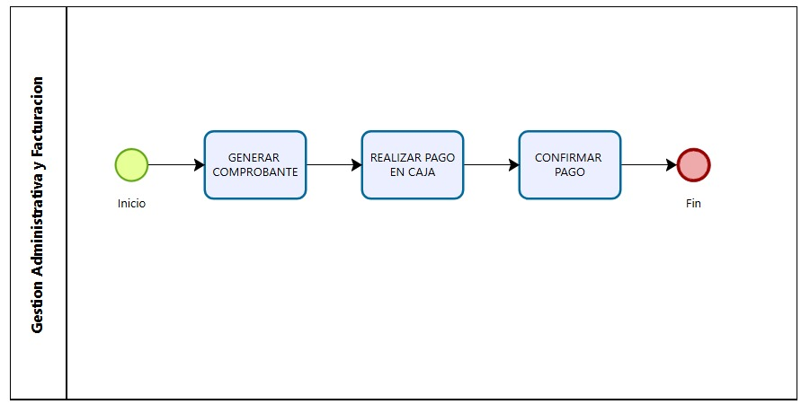
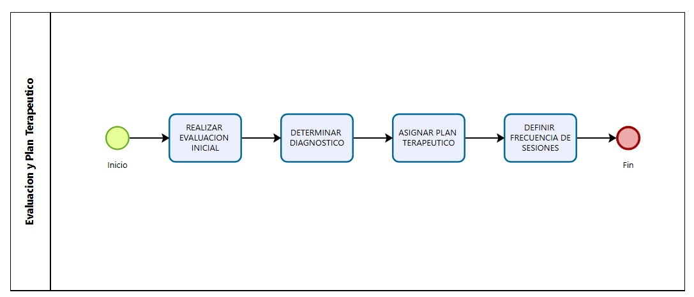
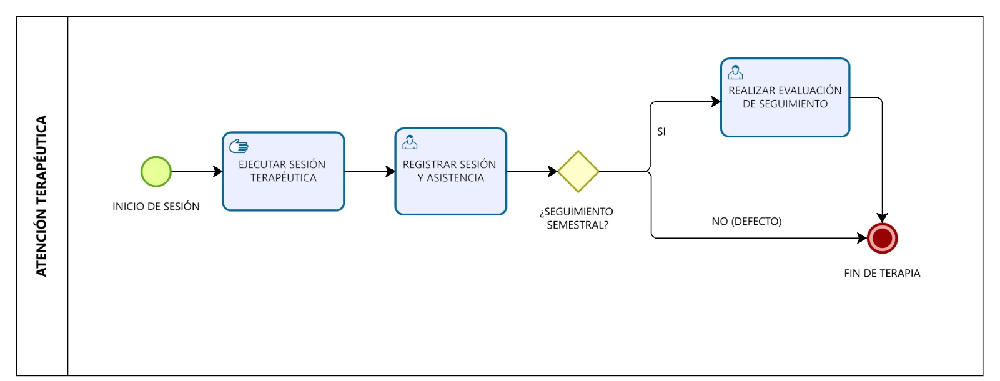
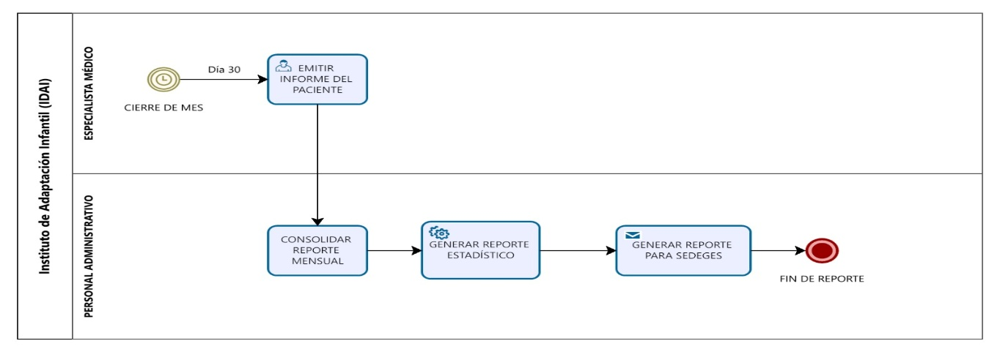

14.1 DFD – Nivel 0
Visión de más alto nivel del sistema: muestra el proceso central del SIGAP-DIC-IDAI, las entidades externas que interactúan con él (Tutor, Especialista, Administrador) y los flujos de datos entre ellas.

14.2 DFD – Nivel 1
Descomposición del sistema en sus procesos principales: registro de beneficiarios, gestión de citas, control de terapias y generación de reportes, con sus almacenes de datos correspondientes.

14.3 DFD – Nivel 2
Mayor nivel de detalle sobre los subprocesos internos, mostrando las transformaciones específicas de datos dentro de cada módulo del sistema y las interacciones entre almacenes de datos.

15. Diagrama de Procesos
Vista general de todos los procesos del sistema SIGAP-DIC-IDAI, mostrando el flujo principal de información entre los módulos de gestión del instituto.

15. Diagramas de Subprocesos
Cada subproceso descompone en detalle una parte específica del flujo general, mostrando los pasos, decisiones y actores involucrados en cada área del sistema.
15.1 Subproceso I – Admisión y Registro de Beneficiarios
Describe el flujo para registrar a un nuevo beneficiario en el sistema, incluyendo la verificación de datos, clasificación como paciente interno o externo, y la generación del expediente clínico inicial.

15.2 Subproceso II – Gestión Administrativa y Facturación
Detalla el proceso de cobro de servicios para pacientes externos, el registro de pagos por terapias individuales (10 Bs) y evaluaciones multidisciplinarias (60 Bs), y la emisión de comprobantes.

15.3 Subproceso III – Evaluación y Plan Terapéutico
Muestra cómo el especialista realiza la evaluación diagnóstica inicial, define el plan de intervención y asigna el programa terapéutico personalizado para cada beneficiario.

15.4 Subproceso IV – Atención Terapéutica
Ilustra el registro de sesiones de terapia, la marcación de asistencia, el ingreso de observaciones clínicas y la actualización del progreso del plan terapéutico del beneficiario.

15.5 Subproceso V – Gestión de Reportes
Describe la generación de reportes estadísticos y mensuales del instituto, incluyendo la selección de parámetros, consolidación de datos clínicos y la exportación de informes para el SEDEGES y uso interno.
